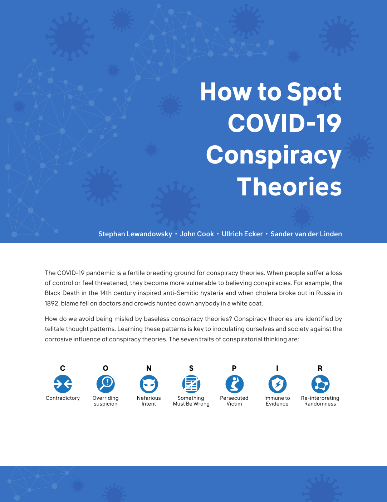
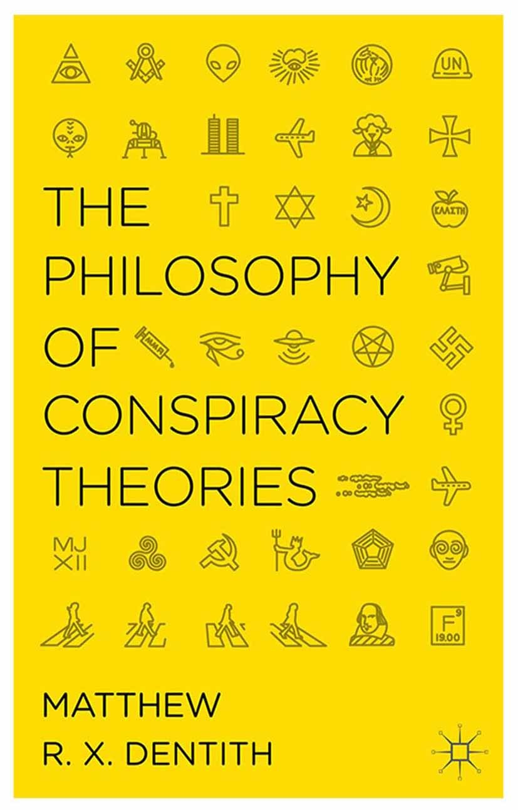
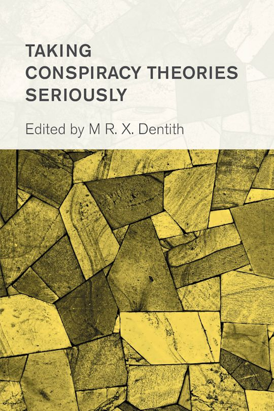
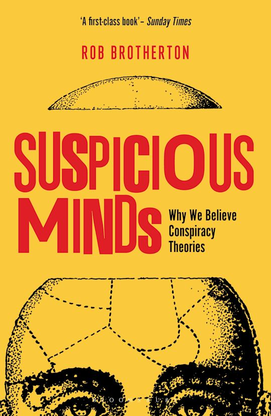
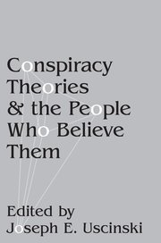
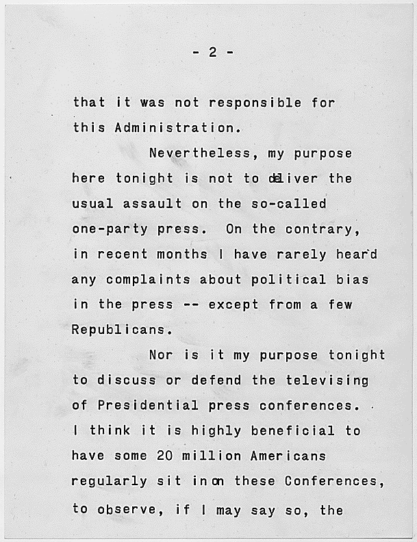
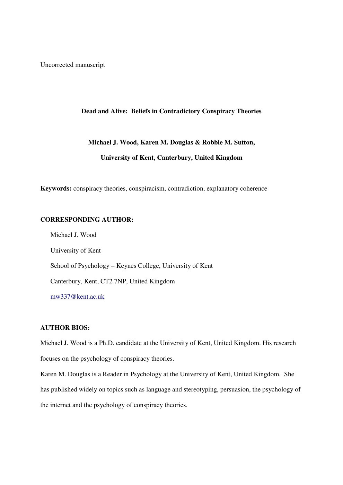
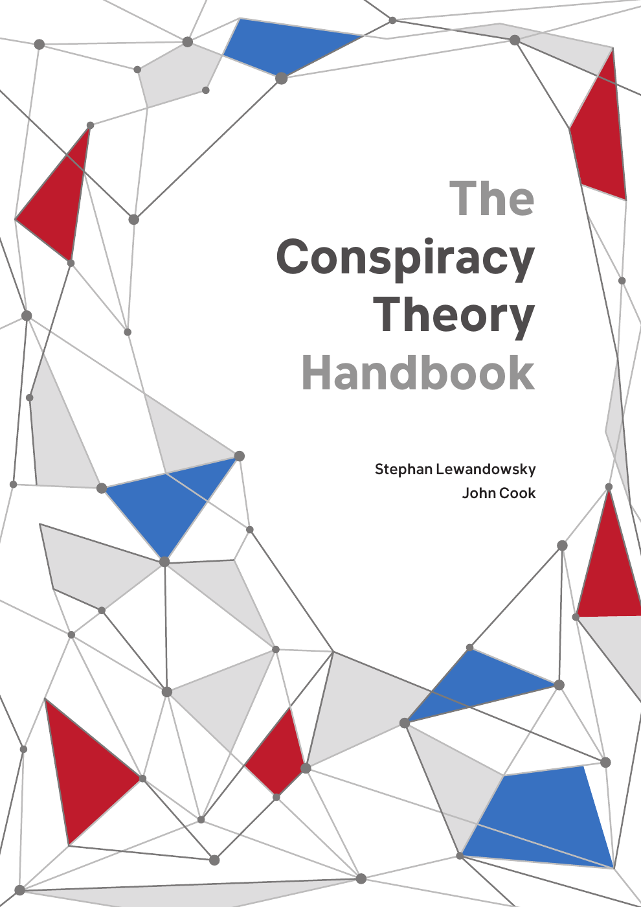

1:10:46 · 19 OPERE
Teorie della cospirazione.
Il filo del discorso
Il contributo difende il pensiero critico come condizione della cittadinanza e concentra la polemica sull’uso dell’etichetta teoria della cospirazione. Secondo Dr Divago, parole nate per descrivere ipotesi precise possono diventare strumenti con cui escludere preventivamente una domanda o screditare chi la formula. La distinzione fra cittadino e suddito, richiamata attraverso Massimo Fini, apre una riflessione su linguaggio, autorità, diritto al dissenso e alfabetizzazione.
Leggi la sintesi completaRiduci la sintesi
I giudizi sulle restrizioni sanitarie rimangono suoi: non costituiscono una qualificazione giuridica di ogni provvedimento o la prova che l’intera Costituzione sia stata sospesa. L’oggetto principale è una serie di materiali divulgativi e libri sulle teorie del complotto. Occorre distinguere due documenti: How to Spot COVID-19 Conspiracy Theories, opuscolo di maggio 2020 firmato da Lewandowsky, Cook, Ecker e van der Linden, e The Conspiracy Theory Handbook, manuale di marzo 2020 dei soli Lewandowsky e Cook. Dr Divago contesta gli esempi estremi e i criteri con cui tali materiali descrivono un pensiero impermeabile alle prove. La verifica dei testi completa e corregge questa lettura: il manuale riconosce l’esistenza di complotti reali e l’utilità di uno scetticismo fondato sulle prove, mentre l’esempio nello stato americano della Georgia dell’altro opuscolo chiede a 42 partecipanti di inventare teorie, non misura rappresentativamente le loro convinzioni. La vignetta Baby Yoda illustra una fallacia causale, senza sostenere che il personaggio abbia provocato la pandemia. Il relatore teme soprattutto la confusione fra dubbi su eventi storici e racconti palesemente fantastici. Le immagini del mago dietro la tenda, della lettera rubata e della verità imposta a Winston Smith traducono questa preoccupazione in riferimenti letterari. Tuttavia nemmeno i volumi accademici mostrati formano un fronte omogeneo: Taking Conspiracy Theories Seriously e il probabile libro filosofico di Dentith difendono la valutazione dei singoli casi. Brotherton e la raccolta curata da Uscinski hanno impostazioni differenti. Dal titolo di un libro o dall’appartenenza accademica non si può dedurre una volontà repressiva; allo stesso modo, persone appartenenti a una comunità religiosa non possono essere trattate come una popolazione uniforme. Un passaggio riguarda lo studio in cui credere Diana uccisa risulta correlato con attribuire plausibilità alla simulazione della sua morte. L’identificazione probabile è Dead and Alive di Wood, Douglas e Sutton, 2012, citato nella bibliografia del manuale. I campioni sono studenti universitari e l’analisi riguarda correlazioni fra punteggi: non certifica che tutte le persone critiche credano fermamente a due spiegazioni incompatibili. Una successiva discussione metodologica, distinta dal momento del video, mostra inoltre che l’interpretazione di tali correlazioni è oggetto di ricerca. Non ne derivano diagnosi, conclusioni sul caso Diana o una confutazione di tutta la psicologia. Gli esempi storici servono a ricordare che accordi occulti e falsificazioni sono possibili. Il discorso di Kennedy The President and the Press del 27 aprile 1961 appartiene però alla Guerra fredda e non rivela un governo segreto interno agli Stati Uniti; il testo difende anche la libertà della stampa e il valore della critica. L’avvertimento di Eisenhower sul complesso militare-industriale è un altro discorso. Nel Tonchino va distinto l’attacco effettivo del 2 agosto 1964 da quello presunto del 4 agosto, che non avvenne; Gleiwitz è una provocazione SS documentata del 1939. Nessuno di questi casi rende vere per analogia tutte le ricostruzioni di altri eventi. La conclusione torna ai criteri della conoscenza: riconoscere anomalie può motivare un’indagine, ma non identifica già un responsabile. Un coordinamento istituzionale pubblico non coincide necessariamente con una cospirazione illecita, e una successione di coincidenze va valutata con un modello e un campione espliciti. Anche i giudizi scientifici richiedono misure: l’esperienza locale non basta a stimare la mortalità di una popolazione o una tendenza climatica, e il ruolo energetico del Sole non spiega da solo il riscaldamento recente. Il richiamo finale a Kant chiede di usare il proprio intelletto; nella scheda questo invito comprende la disponibilità a verificare tanto le versioni ufficiali quanto le interpretazioni del relatore.
I libri nel discorso

Costituzione della Repubblica Italiana
Note sul riferimento
Copertina dell’edizione Intra aggiornata al 2023: Intra · 2023 · introduzione di Umberto Vincenti
Copertina autentica del testo integrale, aggiornata alla legge costituzionale 26 settembre 2023 n.1. È successiva al filmato del 2019 e non rappresenta la versione storica letta dal relatore. Umberto Vincenti firma l’introduzione.
Costituzione esplicita nel discorso su pensiero, espressione e clausola sanitaria. Il giudizio di sospensione generale resta del relatore, non qualificazione giuridica della scheda.

Sudditi. Manifesto contro la democrazia
Note sul riferimento
Copertina della raccolta: COPERTINA DELLA RACCOLTA Il vizio oscuro dell’Occidente e Sudditi, Marsilio, Tascabili Maxi, 2012, 224 pagine, ISBN 9788831711623. Sudditi fu pubblicato separatamente nel 2004, I grilli, 147 pagine, ISBN 9788831784122. Non si attribuisce al video la raccolta del 2012.
Copertina ufficiale Marsilio azzurra, nera e bianca, con entrambi i titoli leggibili. L’immagine raffigura la raccolta che comprende il saggio.
Massimo Fini e libro Sudditi espliciti; stessa opera del 2004, non nuovo titolo dalla traduzione o dalla raccolta successiva.

I Have a Dream (discorso del 28 agosto 1963)
Note sul riferimento
Copertina dell’edizione illustrata con estratti del discorso, Kadir Nelson: Anne Schwartz Books / Penguin Random House, 14 gennaio 2025; illustrazioni di Kadir Nelson; edizione illustrata con estratti del discorso
La voce identifica il discorso del 1963, non una lettura del libro per bambini. Immagine dell’edizione illustrata 2025 dello stesso discorso: non copertina del documento originale e non edizione citata. La guida dell’editore descrive l’edizione del 2012 come estratto illustrato; non trasferiti ISBN o data 2012 alla copertina 2025.
Martin Luther King e I Have a Dream espliciti nella trascrizione automatica; il passo sul colore della pelle e sul carattere è riconoscibile. Nessuna edizione del libro illustrato identificata nel video.

How to Spot COVID-19 Conspiracy Theories
Identificazione probabile
Note sul riferimento
Prima pagina originale dell’opuscolo, non copertina esterna: Maggio 2020, opuscolo di quattro pagine; prima pagina originale
L’immagine è la prima pagina e non una copertina commerciale. Il PDF è distribuito nel sito di un coautore; il server originario GMU ha restituito errore TLS e non è stato aggirato.
Presenta un PDF e nomina Lewandowsky e Cook; titolo completo non pronunciato. Identificazione probabile dalla corrispondenza dei contenuti, dei sette tratti e della vignetta Baby Yoda con l’opuscolo di maggio 2020; gli autori effettivi sono quattro.

Il mago di Oz
Note sul riferimento
Copertina: BUR Ragazzi · 2000
Immagine autentica dell’opera, controllata visivamente; l’edizione di riferimento non è attribuita al filmato.
Frank Baum e Il mago di Oz espliciti; romanzo distinto dal successivo adattamento cinematografico e dalla formulazione della battuta in esso resa celebre.

Il mago di Oz / The Wizard of Oz
Identificazione probabile
Note sul riferimento
Immagine ufficiale Warner · edizione 4K del film del 1939: Film MGM,1939, con Judy Garland; la scheda Warner reca25 agosto 1939. Immagine promozionale ufficiale della distribuzione4K attuale, non una stampa originale della prima uscita e non copertina del romanzo del 1900.
Keyart contemporaneo della versione4K, proveniente dalla scheda Warner Bros. Non datato come poster originale 1939 e non attribuito alla specifica scena dietro la tenda.
Pay no attention to that man behind the curtain richiama probabilmente la battuta del film MGM 1939, non verificata come frase letterale del romanzo 1900. Riferimento al film, adattamento distinto.

La lettera rubata
Note sul riferimento
Copertina: Mursia · I Picci one · edizione del singolo racconto
Immagine autentica dell’opera, controllata visivamente; non identifica l’edizione usata nel video.
Edgar Allan Poe, il titolo inglese deformato dalla trascrizione automatica e La lettera rubata sono espliciti. Il solo nome di Lacan non consente di identificare un suo libro.

The Philosophy of Conspiracy Theories
Identificazione probabile
Note sul riferimento
Copertina originale della monografia 2014: Palgrave Macmillan, Londra, 2014; eBook ISBN 9781137363169; hardcover ISBN 9781137363152
Identificazione della citazione probabile; non presentata l’immagine del 2014 come copertina di un’opera 2024 o di un’altra raccolta.
Formula una filosofia della conspiracy theory, autore non pronunciato: identificazione probabile della monografia Dentith del 2014, non della diversa raccolta Routledge 2024.

Taking Conspiracy Theories Seriously
Note sul riferimento
Copertina originale della raccolta 2018: Rowman & Littlefield, 16 novembre 2018, 266 pagine, ISBN 9781786608291
Raccolta dichiarata come tale. Nessun capitolo inventato o aggiunto dal solo elenco dei collaboratori.
Prendere le teorie della cospirazione sul serio è traduzione esplicita del titolo Taking Conspiracy Theories Seriously; curatore e raccolta confermati dall’editore.

Suspicious Minds: Why We Believe Conspiracy Theories / Menti sospettose. Perché siamo tutti complottisti
Note sul riferimento
Copertina originale di Suspicious Minds: Bloomsbury Sigma, paperback 25 agosto 2016, ISBN 9781472915634; immagine della edizione inglese
L’immagine è inglese; non è la copertina Bollati Boringhieri della traduzione citata oralmente. Nessuna edizione specifica certificata dal solo titolo.
Menti sospettose titolo italiano ripetuto; catalogo bibliotecario conferma Rob Brotherton e titolo originale Suspicious Minds. Una sola voce per originale e traduzione.

Conspiracy Theories and the People Who Believe Them
Note sul riferimento
Copertina originale OUP della raccolta: Oxford University Press, 2018/2019, ISBN 9780190844073, DOI 10.1093/oso/9780190844073.001.0001
Copertina ufficiale del volume. Edizione precisa mostrata nel filmato non stabilita.
Conspiracy Theories and the People Who Believe Them titolo inglese esplicito. Uscinski curatore, non unico autore; non assegnati tutti i capitoli alla medesima posizione.

1984
Identificazione probabile
Note sul riferimento
Copertina: Newton Compton · edizione illustrativa
Winston Smith e O’Brien, con l’imposizione della verità da parte del potere: identificazione probabile del romanzo 1984, non titolo pronunciato in questo punto.

The President and the Press, 27 aprile 1961
Identificazione probabile
Note sul riferimento
Pagina 2 della reading copy archivistica, non copertina o frontespizio: Reading copy, 27 aprile 1961; NARA 193865 / JFK Library, pagina numerata 2
Scansione autentica di una pagina interna conservata da NARA / JFK Library, collegata dal deposito istituzionale DPLA. Numerazione e pagina complete: non è un frontespizio né la pagina del passo sulla cospirazione citato nel video. Il contenuto riguarda stampa e conferenze presidenziali. Nessuna ricostruzione grafica, ritratto o immagine di altro discorso.
Kennedy e 1961 espliciti, seguiti dalla traduzione del passo sulla cospirazione monolitica: identificazione probabile del discorso del 27 aprile, titolo non pronunciato. Il contesto integrale è la Guerra fredda.

Discorso di commiato alla nazione (Farewell Address), 17 gennaio 1961
Identificazione probabile
Note sul riferimento
Prima pagina del comunicato originale del discorso di commiato del 1961: White House · comunicato stampa del 17 gennaio 1961 · prima pagina
Prima pagina del comunicato dalla copia conservata dalla biblioteca presidenziale. È un documento d’archivio, non una copertina di libro. PDF originale e relativa impronta conservati privatamente.
Eisenhower e avvertimento sul complesso militare-industriale: richiamo probabile al discorso di commiato 17 gennaio 1961, non titolo pronunciato.

Dead and Alive: Beliefs in Contradictory Conspiracy Theories
Identificazione probabile
Note sul riferimento
Frontespizio del manoscritto autore non corretto, University of Kent: Social Psychological and Personality Science 3(6), 2012, pp. 767–773, DOI 10.1177/1948550611434786; immagine dal manoscritto autore non corretto
Dichiarato manoscritto autore non corretto; immagine distinta dalla prima pagina della versione impaginata Sage. Respinta per questa voce la pagina didattica Pittsburgh con sottolineature e cancellature rosse, conservata soltanto come fonte privata.
Studio su Diana uccisa e contemporaneamente viva, senza titolo né autori nel parlato: identificazione probabile dal caso distintivo e dal rinvio bibliografico numero 30 del manuale. Metodi e limiti verificati nel manoscritto autore.

L’arte di ottenere ragione. Esposta in 38 stratagemmi
Note sul riferimento
Copertina: Adelphi, Piccola Biblioteca 274, 1991, 124 pagine, ISBN 9788845908569. Traduzione di Nicola Curcio e Franco Volpi, cura di Franco Volpi. Trattato postumo noto come Eristische Dialektik.
Copertina integrale autentica Adelphi arancione: autore, titolo, sottotitolo, numero 274 e marchio. Sostituita la versione di condivisione sociale con il file specifico della copertina individuato nella pagina dell’editore. Il collegamento all’opera resta probabile; il titolo non è pronunciato.
Schopenhauer, L’arte di ottenere ragione e stratagemmi espliciti. Numeri dei singoli stratagemmi non assegnati arbitrariamente al documento criticato.

Amleto
Identificazione probabile
Note sul riferimento
Copertina: BUR · 2022 · traduzione di Rocco Coronato · illustrazioni di John Austen
Immagine autentica dell’opera, controllata visivamente; non identifica l’edizione usata nel video.
Il marcio in Danimarca richiama probabilmente Amleto I, 4. Titolo non pronunciato; frase di un personaggio, non prova storica su un paese.

The Conspiracy Theory Handbook
Note sul riferimento
Copertina originale del manuale: Marzo 2020, Center for Climate Change Communication, George Mason University; dodici pagine
Copertina autentica, distinta dalla prima pagina dell’altro opuscolo. Non attribuita al video una particolare copia cartacea.
Manuale delle teorie cospiratorie dei due autori esplicitamente richiamato: identificazione con The Conspiracy Theory Handbook, marzo 2020, distinto dall’opuscolo COVID-19 successivo.

Risposta alla domanda: che cos’è l’Illuminismo?
Identificazione probabile
Note sul riferimento
Copertina della raccolta che comprende il saggio sull’Illuminismo: Firenze University Press · Sette scritti politici liberi · 2011 · a cura di Maria Chiara Pievatolo
Copertina del volume cartaceo FUP che comprende il saggio, riscontrato dal catalogo universitario. L’ISBN appartiene alla raccolta; il filmato non annuncia un’edizione e il titolo del saggio è un’identificazione probabile della citazione.
Invito cantiano in tedesco ad avere il coraggio di usare il proprio intelletto: probabile richiamo a Risposta alla domanda: che cos’è l’Illuminismo?, 1784; titolo non pronunciato.